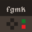

Welcome to FGMK’s documentation!¶
The FGMK project has the goal of building a transparent, easy to use and hack, RPG game making tool.

The project seeks to reach this goal by providing a spec for writing and interpret text files as games, a tool for writing these files in an easy to use interface, and an engine to allow playing these files as a game.
Contents:
For more information, check the Project’s Github Page: github.com/ericoporto/fgmk
If you are curious about the engine that’s packed together, it’s code is here: github.com/ericoporto/fgmkJsEngine